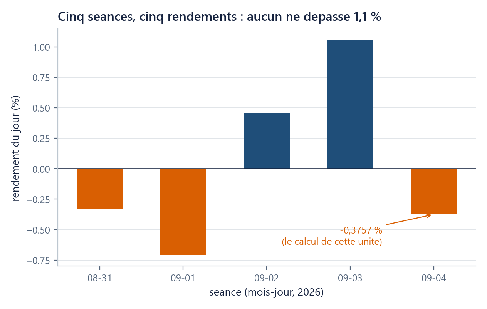

Où suis-je ? unité 2 sur 8
Les unités du chapitre
- 01Six lignes suffisent pour voir…15 min
- 02Un nom retient un résultat…20 min
- 03Une liste range des prix dans l'ordre20 min
- 04Une boucle parcourt25 min
- 05Une fonction nomme un calcul20 min
- 06Un tableau numpy remplace la boucle25 min
- 07Votre machine devient l'ordinateur du cours30 min
- 08Huit fiches d'une page suffisent…45 min
Dans cette unité
Outils : Python de zéro, sans rien installer
Un nom retient un résultat ; un message d’erreur dit lequel manque
Une variable est un nom collé à une valeur ; les quatre messages d'erreur qui comptent disent chacun une chose précise et se réparent en une ligne.
Durée 20 min · Prérequis u01 · Idée unique : une variable est un nom collé à une valeur ; les quatre messages d'erreur qui comptent disent chacun une chose précise et se réparent en une ligne.
La question
Deux séances consécutives du S&P 500, prises à la fin du fichier du cours : le 3 septembre 2026, clôture à 7 747,71 ; le 4 septembre 2026, clôture à 7 718,60.
L'indice a baissé. Mais de combien ? « 29,11 points » ne se compare à rien : le CAC 40 clôture autour de 8 278 et l'action AAPL autour de 320, une baisse de 29 points n'a pas le même sens sur les trois. Le seul chiffre comparable est la variation en pourcentage. Et une fois ce pourcentage calculé, une deuxième question surgit tout de suite : comment le garder, pour le réafficher, le comparer à celui de la veille, ou le réutiliser trois cellules plus loin ? En u01, la figure s'est affichée puis a disparu de la mémoire de la machine ; rien n'a été retenu.
On essaie d’abord
Écrivez, avant de coder, votre estimation de cette variation à deux décimales près, avec son signe. Une seule contrainte : de tête, sans machine et sans poser la division.
Seulement une fois votre chiffre écrit, vérifiez votre ordre de grandeur : 29,11 rapporté à environ 7 750, c'est un peu moins de quatre millièmes. La réponse est −0,3757 %. Si vous avez écrit « −0,38 % » ou « −0,4 % », vous avez l'ordre de grandeur, ce qui est exactement le but : à partir de maintenant, chaque nombre que la machine affichera devra tomber près d'un nombre que vous aviez en tête. Un résultat de calcul qui ne vous surprend jamais est un résultat que vous ne relisez plus.
L’idée
= range une valeur, il ne compare pas
hier = 7747.71
aujourdhui = 7718.60
Chacune de ces lignes fabrique une variable : un nom collé à une valeur. L'opération s'appelle une affectation. Le signe = n'est pas le « égale » des mathématiques et ne pose aucune question : il range. Il se lit de droite à gauche : « prends 7 747,71 et appelle-le hier ». Ce que le nom retenait avant est perdu sans avertissement.
Deux détails d'écriture : le séparateur décimal est le point, jamais la virgule ; et pas d'espace dans les nombres, puisque 7 747,71 s'écrit 7747.71.
Le premier calcul du cours
rendement = aujourdhui / hier - 1
print(rendement) # -0.003757239235851584
La première ligne calcule d'abord ce qui est à droite du =, puis range le résultat sous le nom rendement. La seconde l'affiche : print est l'outil qui montre une valeur, et c'est le seul moyen de voir ce que contient un nom.
Le nombre affiché a quinze décimales et se lit mal. Voici la forme lisible :
print(f"rendement : {rendement:.4%}") # rendement : -0.3757%
Le f avant le guillemet ouvre une f-string : un texte à trous. Ce qui est entre accolades est remplacé par la valeur du nom, et ce qui suit les deux-points dit comment l'écrire : ici .4% signifie « en pourcentage, avec quatre décimales ». Le texte hors des accolades est recopié tel quel.
Le rendement simple. Le nombre que vous venez de calculer porte un nom : le rendement simple d'une période, c'est-à-dire la variation relative d'un prix entre deux dates.
R = \frac{S_1}{S_0} - 1S_0 est le prix de départ (7 747,71), S_1 le prix d'arrivée (7 718,60), et R la variation relative, sans unité, qu'on affiche en pourcentage. Il n'en est rien dit de plus ici : pourquoi un prix n'est pas un rendement, et pourquoi deux échelles de rendement coexistent en finance, c'est le sujet de ch01 u01.

Une précision d'ingénieur, à lire une fois. Les clôtures du S&P 500 sont publiées avec deux décimales (7 747,71), mais le fichier du cours les range dans un format de stockage plus court, dit simple précision, qui retient environ sept chiffres significatifs : 7 747,71 y est écrit 7747.709961. Ces quatre décimales supplémentaires ne sont pas une information de plus, c'est la trace du format. En tapant 7718.60 / 7747.71 - 1 vous obtenez -0.003757239… ; en repartant du fichier, -0.003757222…. Les deux s'affichent -0.3757%, et l'écart vaut 1{,}8 imes 10^{-8}. La règle de travail : le format dans lequel une donnée est rangée se propage à votre résultat exactement comme un arrondi, et la seule question qui compte est de savoir s'il se voit au format que vous affichez. Nuance à connaître : les colonnes ajustées du fichier (SPY, AAPL, LVMH, TTE, TLT) portent, elles, une vraie précision supplémentaire, parce qu'elles intègrent des facteurs de correction ; AAPL vaut 6,40096 le 4 janvier 2010, et ces décimales-là sont bien de l'information.
Quatre natures de valeur
Toute valeur a un type, c'est-à-dire une nature qui décide de ce qu'on peut en faire. Quatre suffisent pour tout le chapitre :
| Type | Ce que c'est | Exemple du fil rouge |
|---|---|---|
float |
un nombre à virgule | 7718.60, -0.0037572 |
int |
un nombre entier | 4151 (le nombre de séances) |
str |
un texte, entre guillemets | "SP500" |
bool |
vrai ou faux | aujourdhui < hier vaut True |
type(7718.60) répond float. Le point important est que "7718.60" n'est pas 7718.60 : le premier est un texte qui ressemble à un nombre, le second est un nombre. On peut soustraire deux float, pas un str et un float. La conversion existe et s'écrit float("7718.60").
Les quatre messages d’erreur, provoqués puis réparés
Faites-les, dans l'ordre, et lisez chaque message avant de corriger.
1. Une parenthèse oubliée. Écrivez print(f"rendement : {rendement:.4%}", sans la parenthèse finale.
SyntaxError: '(' was never closed
Une SyntaxError dit que la phrase n'est pas grammaticalement lisible : la machine n'a même pas essayé de l'exécuter. Elle pointe l'endroit exact. Ajoutez la parenthèse.
2. Un nom mal orthographié. Écrivez rendement = aujourdui / hier - 1.
NameError: name 'aujourdui' is not defined
Une NameError dit qu'un nom a été employé sans jamais avoir été rangé. Corrigez l'orthographe.
3. Un texte à la place d'un nombre. Écrivez "7718.60" - 7747.71.
TypeError: unsupported operand type(s) for -: 'str' and 'float'
Une TypeError dit que l'opération n'a pas de sens pour ces natures-là. Le message les nomme toutes les deux : str moins float. Réparation : float("7718.60") - 7747.71.
4. Un décalage parasite. Mettez quatre espaces devant aujourdhui = 7718.60.
IndentationError: unexpected indent
En Python, le décalage à gauche a un sens (u04 s'en servira). Un décalage qui ne répond à rien est refusé. Supprimez les espaces.
Maintenant, la ligne qui compte :
print(f"rendement : {rendement:.4%}") # rendement : -0.3757%
rendement est toujours là, intact, après quatre erreurs. Le # ouvre un commentaire : tout ce qui suit sur la ligne est ignoré par la machine et écrit pour un humain.
Nommer
prix_cloture plutôt que x, rendement plutôt que r1. Un nom se relit six mois plus tard, dans une cellule qu'on n'a pas écrite. C'est la seule règle de style que ce cours impose sans discussion.
Le piège : fermer l’onglet devant un message rouge
L'erreur coûteuse du débutant n'est pas de se tromper : c'est de refermer en croyant avoir cassé quelque chose. Vous venez de provoquer quatre pannes à la suite et de réafficher rendement sans rien perdre. Une cellule qui échoue s'interrompt à la ligne fautive ; ce qui a été rangé avant reste rangé.
Cet ordre (provoquer, lire, réparer) est aussi un investissement rentable. Une étude portant sur plusieurs centaines de milliers de soumissions d'exercices de débutants (Pritchard, 2015) montre que la fréquence des messages d'erreur est très déséquilibrée : une petite poignée de messages fait l'essentiel des blocages. Les deux qui dominent sont la SyntaxError et le NameError, les deux premiers de la liste ci-dessus, et IndentationError n'est pas en tête, contrairement à ce que sa réputation laisse croire. La source ne permet pas d'en donner un pourcentage fiable, seulement de dire que la répartition est très déséquilibrée. Apprendre à lire quatre messages couvre donc la grande majorité des situations où vous serez bloqué, cette année comme après.
Vérifiez-vous
(a) Vous exécutez prix = 7718.60 puis, en dessous, prix = 7747.71. Que vaut prix ?
Réponse
(b) Que produit "3" + 3, et comment le réparer ?
Réponse
(c) (rétrospective) Un prix passe de 100 à 110, puis de 110 à 100. Calculez les deux rendements avec la formule de l'encadré. Se compensent-ils ?
Réponse
(d) (rétrospective) Juste après la TypeError du point 3, rendement contient-il encore quelque chose ?
Réponse
(e) (rétrospective) En u01, ax.plott(...) donnait un AttributeError ; ici aujourdui donne un NameError. Quelle est la différence ?
Réponse
Ce que vous savez faire maintenant
- Ranger une valeur sous un nom, la réafficher, et la mettre en forme avec une f-string.
- Distinguer
float,int,str,bool, et convertir un texte en nombre. - Reconnaître et réparer
SyntaxError,NameError,TypeError,IndentationError, et savoir qu'aucune n'abîme quoi que ce soit.
Unité suivante. Un nom retient une valeur. Pour les 4 151 clôtures du fichier, il faudrait 4 151 noms. L'unité u03 range plusieurs prix d'un coup, de deux façons : dans l'ordre, ou par nom.